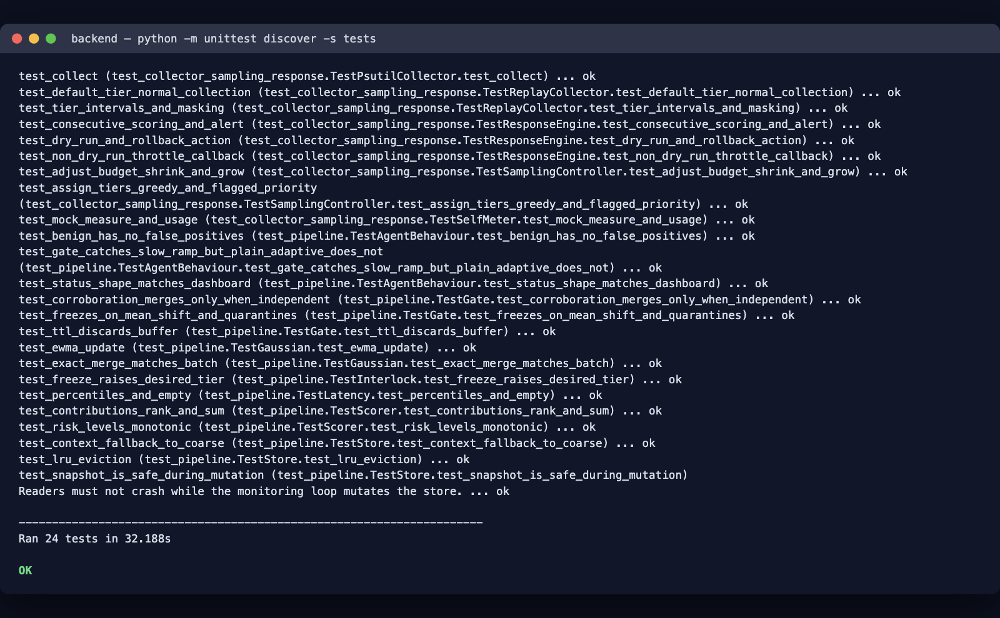
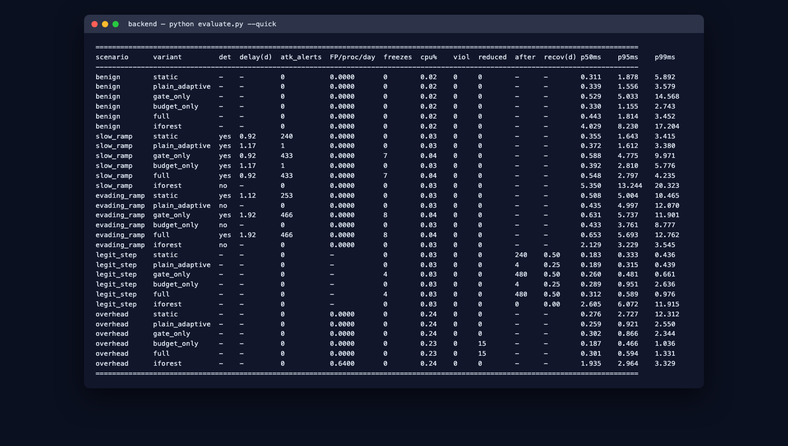
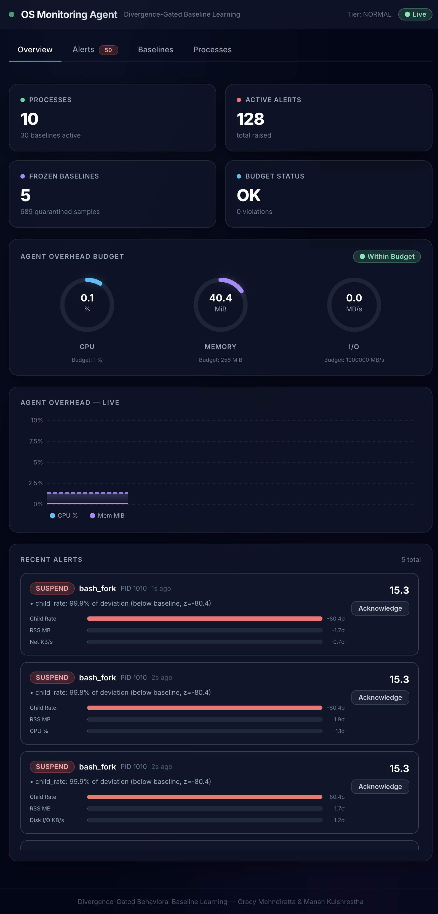
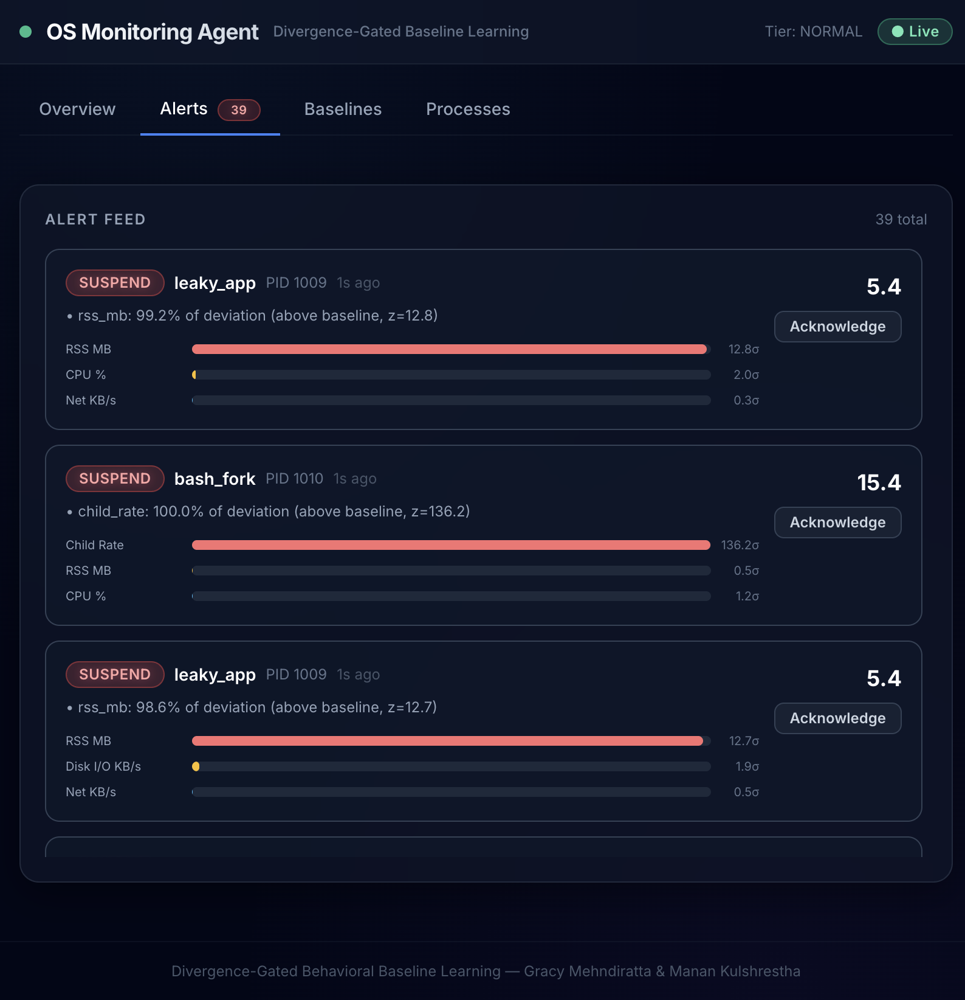
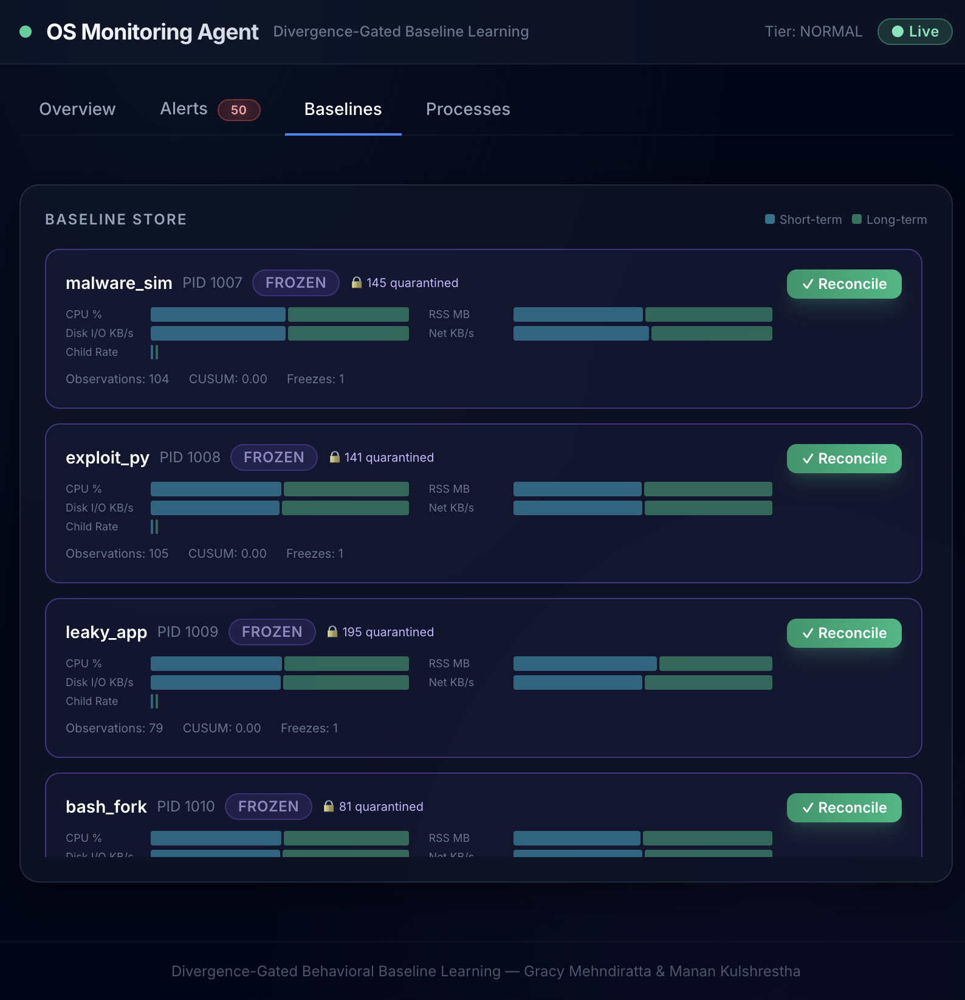
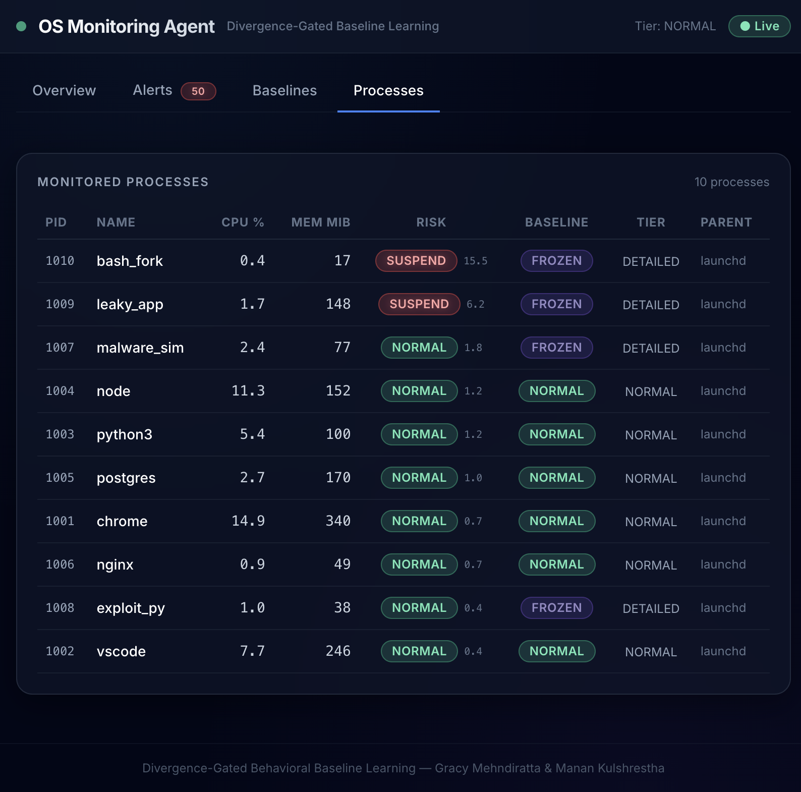
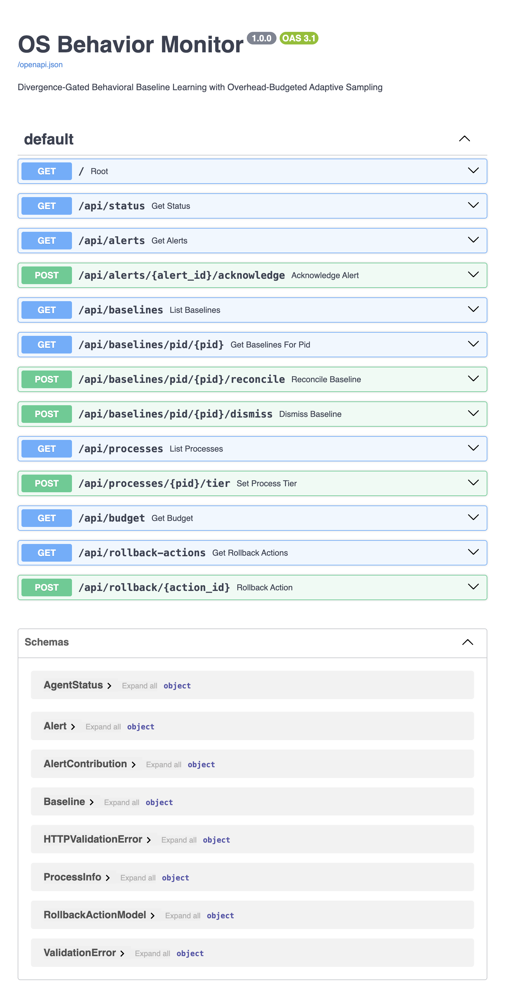

Project Implementation Report — Review 2 / Review 3
| Course | Operating Systems |
| Team members | Gracy Mehndiratta (24BCE2987), Manan Kulshrestha (24BCE0262) |
| Roll numbers | 24BCE2987, 24BCE0262 |
| Repository | https://github.com/gracymehndiratta/os-project |
| Date | October 2026 |
| Document version | 1.0 |
The OS Behavior Monitor is a Python monitoring agent that learns what "normal" behaviour looks like for each application on a machine and raises an explainable alert when a process deviates from that learned behaviour. The project is a research prototype built to produce measured evidence for two interlocking feedback loops:
behavioural baseline by changing a process's behaviour *slowly*, so that the baseline learns the malicious behaviour and never raises an alert (a "boiling frog" / slow-ramp attack). The gate compares three baselines — short-term, long-term and a trusted reference snapshot — and freezes the long-term baseline when it detects suspicious drift. New samples are held in a bounded quarantine buffer and are only merged back after independent corroboration (an administrator confirmation or a verified application update). A return to normal behaviour is never treated as corroboration, because malware can stop on purpose.
everything all the time is itself a resource hog. A self-meter measures the agent's own CPU and memory, and a controller adjusts a per-tick cost budget to stay near a configured CPU target. Sampling is organised into three tiers of increasing cost, and processes are served in priority order within the budget.
sampling tier, so suspicious processes are observed more closely — subject to the budget.
between resources.
corroboration.
responses** in dry-run mode.
against ablations on synthetic attack scenarios.
In scope: per-application, context-keyed baselines; joint multi-resource scoring; a divergence gate with quarantine and reconcile; overhead-budgeted sampling; explainable alerts; graduated responses in dry-run mode; a replay simulator and an evaluation harness.
Out of scope: kernel hooks (eBPF/ETW), real malware, cloud or fleet features, and any claim about performance on real attacks. All attack traces are synthetic.
| Language | Version | Used for |
|---|---|---|
| Python | 3.12 | Monitoring agent, statistics, gate, sampling controller, evaluation harness, API server |
| TypeScript | 5.5 | Dashboard application logic and types |
| TSX / React | 18.3 | Dashboard UI components |
| CSS (Tailwind) | 3.4 | Dashboard styling |
| Library | Version | Role |
|---|---|---|
| FastAPI | 0.111 | REST + WebSocket API |
| Uvicorn | 0.29 | ASGI server |
| Pydantic | 2.7 | Request/response models |
| NumPy | 1.26 | Vectors, covariance, linear algebra |
| SciPy | 1.13 | Chi-squared risk percentiles |
| psutil | 5.9 | Live per-process telemetry |
| websockets | 12.0 | WebSocket transport |
| Library | Version | Role |
|---|---|---|
| React | 18.3 | Component framework |
| Vite | 5.3 | Dev server and bundler (proxies /api and /ws) |
| Recharts | 2.12 | Charts |
| TailwindCSS | 3.4 | Utility-first styling |
| Tool | Role |
|---|---|
Python unittest (standard library) | Unit and integration tests (no pytest dependency) |
| Node.js 23 / npm 10 | Frontend build and dev server |
| Git / GitHub | Version control and repository hosting |
The project is developed and tested on macOS (Darwin) with Python 3.12.4; the backend is pure Python and portable to Linux.
The agent is a per-tick pipeline. Telemetry is collected at a tier chosen by the sampling controller, scored against a context-specific baseline, passed through the gate, and then either learned, quarantined or alerted on.
┌──────────────────────────────────────────────┐
│ MonitorAgent (agent.py) │
└──────────────────────────────────────────────┘
Collector ──► Feature Builder ──► Identity/Context ──► Baseline Store
▲ │
│ sampling tier Joint Scorer ──► Explainer ──► Response Engine
│ │
Sampling Controller ◄── freeze request ◄── Divergence Gate ◄─► Quarantine Buffer
▲ │
Self-Meter (agent CPU / RSS) Corroboration sourcescost budget.
the cheap features (CPU and memory).
and context.
application baseline ("*").
D² and a risk value.discard.
contributions.
budget.
During the warm-up period every sample is used for learning and nothing is scored, so new baselines are not judged on a handful of samples.
The backend is organised into small modules, each mapping to a module contract in the design document. The table below summarises the module map; the subsections that follow describe each module in detail.
| Module | Responsibility |
|---|---|
agent/collector.py | ReplayCollector (synthetic traces) and PsutilCollector (live sampling) |
agent/features.py | Log-scale feature vector, stable identity, time/parent context |
agent/baseline.py | Gaussian, KeyState, QuarantineBuffer, BaselineStore |
agent/scoring.py | Regularized joint Mahalanobis score and ranked contributions |
agent/isolation.py | Isolation-forest ablation (Review 1 prior work) — not the default detector |
agent/gate.py | Drift measures, gate state machine, quarantine, corroboration |
agent/sampling.py | SelfMeter, SamplingController, LatencyTracker |
agent/response.py | Graduated responses, dry-run, rollback |
agent/agent.py | Wires the pipeline and runs the loops |
agent/config.py | All tunable parameters |
agent/data_model.py | Shared data types |
agent/scenarios.py | Synthetic traces for the experiment scenarios |
agent/evaluation.py | Variants, scenario runner, metrics table |
agent/api.py | FastAPI REST + WebSocket |
agent/models.py | Pydantic response models |
backend/simulator.py | Standalone demo / replay / live runner |
backend/evaluate.py | Evaluation harness CLI |
Five canonical features are used per process, matching the design document:
| Index | Feature | Unit | Notes |
|---|---|---|---|
| 0 | cpu_pct | % CPU | |
| 1 | rss_mb | MB | Resident memory |
| 2 | disk_io_kbps | KB/s | Combined read + write |
| 3 | net_kbps | KB/s | Combined network; live mode uses an open-socket-count proxy |
| 4 | child_rate | procs/s | Rate of new child processes |
Live psutil collection has no per-process network byte counter, so the live collector uses the open-socket count as a proxy. Real byte counts require eBPF or ETW, which are explicitly out of scope.
Each full sample is transformed to a log-scale vector with log1p(max(x, 0)) so that multiplicative and heavy-tailed resources behave additively and the Gaussian assumptions of the scorer are more reasonable.
A baseline must survive PID reuse, so two identities are maintained:
(application_id() in features.py); a restarted process reuses the same baseline.
pid@start_time (process_instance_id()).The context discriminator is time-bucket|username|parent, where the time bucket is one of night, morning, afternoon, evening. This prevents a midnight cron job from being scored against a daytime interactive baseline. A BaselineKey is (application_id, context); the coarse fallback context is the literal "*".
Two collectors implement the same contract and both return Sample objects:
the controller, honouring each tier's sampling interval and feature mask. It drives the evaluation harness and unit tests.
disk read+write rate, open-socket count (network proxy) and child-process rate.
n, a mean vector and a covariance matrix. Itsupports an exact online (Welford) update, an exponentially-weighted (EWMA) update (used for the short and long baselines so they react at different rates), and an exact parallel merge used when quarantined samples are reconciled. The mean and covariance are stored unregularized; every consumer adds its own ridge.
accumulator, the quarantine buffer, and freeze bookkeeping for one BaselineKey.
BaselineKey → KeyState with coarse fallback and **LRUeviction** (default cap 256 keys). All dict access is serialized with an RLock because the monitoring thread mutates the store while the API/WebSocket threads snapshot it.
The scorer computes a regularized joint Mahalanobis distance between a sample's log-scale vector and the long baseline:
D² = (x − μ)ᵀ (Σ + λI)⁻¹ (x − μ)Because Σ captures correlations between resources, the score detects *combinations* of moderate deviations rather than double-counting correlated ones. The risk value is the chi-squared CDF at df = 5. Each alert carries ranked per-feature contributions δᵢ · (Σ⁻¹δ)ᵢ / D², so a reviewer can see exactly which resource drove the alert.
Three drift measures guard against slow poisoning:
which catches an attacker who moves both short and long baselines together.
The gate is a state machine per key:
| State | Behaviour | Exit |
|---|---|---|
| NORMAL | Short baseline always learns; long baseline learns only if the sample score is under the update guard | Freeze when mean shift, CUSUM or reference drift crosses its threshold |
| FROZEN | Long baseline is not updated; samples go to quarantine; the key is flagged | MERGE on independent corroboration, DISCARD when the TTL expires |
| MERGE | Buffer summary is merged into the long baseline; reference reset; CUSUM cleared | Back to NORMAL |
| DISCARD | Buffer dropped; short baseline reset to the long baseline | Back to NORMAL; the gate may freeze again |
Drift measures are standardized by the trusted reference covariance (not the live long covariance), so a slow ramp cannot hide by inflating the long baseline's own variance. The reference snapshot is taken once the long baseline has converged (2 × min_samples).
The controller keeps a cost budget in units per tick. When measured agent CPU exceeds the target the budget shrinks by 20%; when usage stays below 70% of the target for several windows the budget grows by 15%. The asymmetric thresholds and the dwell count provide hysteresis and prevent oscillation.
| Tier | Interval | Features | Cost / tick |
|---|---|---|---|
| 0 — MINIMAL | every 8 ticks | CPU + memory only | 0.125 units |
| 1 — NORMAL | every 2 ticks | all five | 2 units |
| 2 — DETAILED | every tick | all five | 4 units |
When the budget is tight, processes are served in priority order: flagged and high-risk processes first. Every process keeps at least tier 0, and each tick where a process receives less than it wanted is counted as reduced coverage (a signal that load may be pushing the monitor into degraded sampling).
A LatencyTracker records per-sample processing latency and reports p50/p95/p99 (the design's live-run metric).
Risk levels map to graduated responses:
| Risk level | Severity | Response |
|---|---|---|
| NORMAL | none | log only |
| NOTIFY | medium | notify administrator |
| THROTTLE | high | escalate sampling tier + notify |
| SUSPEND | critical | consider suspension (dry-run unless enabled) |
Alerts fire only after alert_consecutive (default 3) consecutive high-risk samples. All disruptive actions are recorded as reversible RollbackActions. The engine stays in dry-run mode by default so automated suspension cannot disrupt legitimate processes.
MonitorAgent wires the pipeline together and runs the two loops each tick. It maintains both the exact-context baseline and the coarse ("*") baseline, and applies two interlocks:
The backend exposes a REST API under /api and a WebSocket at /ws. The React dashboard connects to the WebSocket for live status and polls the REST endpoints for alerts, baselines and processes. It has four views: Overview (status cards, overhead gauges, overhead chart, recent alerts), Alerts (explainable alert feed), Baselines (short/long bars, gate state, quarantine counts, reconcile button) and Processes (risk, baseline state and sampling tier per process).
All parameters live in agent/config.py. The defaults below are starting points; the design document says to choose final values from experiments, and the evaluation harness is used to re-tune them.
| Parameter | Default | Meaning |
|---|---|---|
baseline.alpha_short / alpha_long | 0.1 / 0.01 | EWMA rates of the two baselines |
baseline.min_samples | 30 | Samples before a baseline is trusted |
baseline.ridge | 0.02 | Covariance regularization (minimum tolerance, log units) |
baseline.max_entries | 256 | LRU cap on stored (application, context) keys |
gate.shift_thr | 1.5 | Short-vs-long standardized shift that triggers a freeze |
gate.cusum_k / cusum_h | 0.5 / 12.0 | CUSUM allowance (slack) and alarm level |
gate.ref_thr | 1.0 | Long-vs-reference shift that triggers a freeze |
gate.update_guard | 3.0 | Per-sample score above which the long baseline does not learn |
gate.ttl_days | 1.0 | Lifetime of an uncorroborated quarantine buffer |
gate.max_buffers / max_buffer_samples | 64 / 512 | Buffer caps |
score.notify / throttle / suspend | 0.995 / 0.9995 / 0.99995 | Chi-squared risk percentiles for response levels |
score.alert_consecutive | 3 | Consecutive high-risk samples before an alert fires |
sampling.cpu_budget_pct | 1.0 | Target agent CPU use (percent of one core) |
sampling.window_ticks | 20 | Self-meter measurement window |
sampling.budget_shrink / budget_grow | 0.20 / 0.15 | Budget change per over/under window |
sampling.grow_threshold / dwell_count | 0.70 / 3 | Grow only after several under-target windows |
sampling.initial_budget / min / max | 64 / 4 / 512 | Cost-budget bounds (units per tick) |
dry_run | True | Disruptive responses are logged, not executed |
ticks_per_day | 1440 | Replay ticks representing one simulated day |
Tuned in practice. Two knobs were adjusted from the design defaults after experiments: the diurnal amplitude in scenarios._diurnal is 0.08, and the gate's standardization ridge _GATE_RIDGE is 1e-3.
Runtime environment variables (API server):
| Variable | Default | Meaning |
|---|---|---|
OSMON_LIVE | 0 | 1 uses live psutil collection instead of replay |
OSMON_TICK_INTERVAL | 0.5 | Seconds per tick (smaller = faster simulated demo) |
Given the long-baseline mean μ and regularized covariance Σ + λI, the deviation and risk are:
δ = x − μ
D² = δᵀ (Σ + λI)⁻¹ δ
risk = chi2.cdf(D², df = 5)Per-feature contribution cᵢ = δᵢ (Σ⁻¹δ)ᵢ / D², ranked by magnitude, with a z-score δᵢ / σᵢ for direction.
Each sample is mapped to a unit-variance excess centered on the long baseline and scaled by the reference covariance:
e_t = (δᵀ Σ_ref⁻¹ δ − df) / sqrt(2·df)
S_t = max(0, S_{t−1} + (e_t − k))A freeze occurs when S_t ≥ h. Because a benign stream averages zero, k and h are meaningful in standard-deviation units.
if cpu > target: budget ← budget · (1 − 0.20); violations += 1
elif cpu ≤ 0.70 · target: dwell += 1; if dwell ≥ 3: budget ← budget · (1 + 0.15); dwell ← 0
else: dwell ← 0
budget ← clamp(budget, min_budget, max_budget)For two Gaussians with counts n₁, n₂:
n = n₁ + n₂
μ = μ₁ + (μ₂ − μ₁)·n₂/n
Σ = [ n₁Σ₁ + n₂Σ₂ + (n₁n₂/n)·(μ₂−μ₁)(μ₂−μ₁)ᵀ ] / nThis is used when quarantined samples are reconciled after corroboration.
The project uses the Python standard-library unittest runner (no pytest dependency). There are 30 tests across two files:
backend/tests/test_collector_sampling_response.py — the authoritative contract tests forthe collector, self-meter, sampling controller and response engine (9 tests).
backend/tests/test_pipeline.py — baselines, store fallback, LRU, scorer, gatefreeze/quarantine/corroboration/TTL, interlock, latency, concurrent-snapshot safety, the isolation-forest ablation, evaluator fairness and end-to-end agent behaviour (21 tests).
Run them with:
cd backend
python -m unittest discover -s tests
The evaluation harness (backend/evaluate.py) compares six variants against five scenarios:
static, plain_adaptive, gate_only, budget_only, full, and theiforest ablation (Review 1 §6 prior work). The gate_only and budget_only variants isolate each controller, and iforest is the conventional point-anomaly detector evaluated on the same scenarios.
benign, slow_ramp, evading_ramp, legit_step, overhead.feeds each variant an identical noise stream.
Reference results from python evaluate.py --quick (all replay; det is attack detection, after is alerts remaining after the legitimate step, recov(d) is days from corroboration until the alerts stop):
| scenario | variant | det | delay(d) | atk_alerts | FP/proc/day | freezes | cpu% | viol | reduced | after | recov(d) |
|---|---|---|---|---|---|---|---|---|---|---|---|
| benign | static | - | - | 0 | 0.0000 | 0 | 0.02 | 0 | 0 | - | - |
| benign | plain_adaptive | - | - | 0 | 0.0000 | 0 | 0.02 | 0 | 0 | - | - |
| benign | gate_only | - | - | 0 | 0.0000 | 0 | 0.02 | 0 | 0 | - | - |
| benign | budget_only | - | - | 0 | 0.0000 | 0 | 0.02 | 0 | 0 | - | - |
| benign | full | - | - | 0 | 0.0000 | 0 | 0.02 | 0 | 0 | - | - |
| benign | iforest | - | - | 0 | 0.0000 | 0 | 0.02 | 0 | 0 | - | - |
| slow_ramp | static | yes | 0.92 | 240 | 0.0000 | 0 | 0.03 | 0 | 0 | - | - |
| slow_ramp | plain_adaptive | yes | 1.17 | 1 | 0.0000 | 0 | 0.03 | 0 | 0 | - | - |
| slow_ramp | gate_only | yes | 0.92 | 433 | 0.0000 | 7 | 0.04 | 0 | 0 | - | - |
| slow_ramp | budget_only | yes | 1.17 | 1 | 0.0000 | 0 | 0.03 | 0 | 0 | - | - |
| slow_ramp | full | yes | 0.92 | 433 | 0.0000 | 7 | 0.04 | 0 | 0 | - | - |
| slow_ramp | iforest | no | - | 0 | 0.0000 | 0 | 0.03 | 0 | 0 | - | - |
| evading_ramp | static | yes | 1.12 | 253 | 0.0000 | 0 | 0.03 | 0 | 0 | - | - |
| evading_ramp | plain_adaptive | no | - | 0 | 0.0000 | 0 | 0.03 | 0 | 0 | - | - |
| evading_ramp | gate_only | yes | 1.92 | 466 | 0.0000 | 8 | 0.04 | 0 | 0 | - | - |
| evading_ramp | budget_only | no | - | 0 | 0.0000 | 0 | 0.03 | 0 | 0 | - | - |
| evading_ramp | full | yes | 1.92 | 466 | 0.0000 | 8 | 0.04 | 0 | 0 | - | - |
| evading_ramp | iforest | no | - | 0 | 0.0000 | 0 | 0.03 | 0 | 0 | - | - |
| legit_step | static | - | - | 0 | - | 0 | 0.03 | 0 | 0 | 240 | 0.50 |
| legit_step | plain_adaptive | - | - | 0 | - | 0 | 0.03 | 0 | 0 | 4 | 0.25 |
| legit_step | gate_only | - | - | 0 | - | 4 | 0.03 | 0 | 0 | 480 | 0.50 |
| legit_step | budget_only | - | - | 0 | - | 0 | 0.03 | 0 | 0 | 4 | 0.25 |
| legit_step | full | - | - | 0 | - | 4 | 0.03 | 0 | 0 | 480 | 0.50 |
| legit_step | iforest | - | - | 0 | - | 0 | 0.03 | 0 | 0 | 0 | 0.00 |
| overhead | static | - | - | 0 | 0.0000 | 0 | 0.24 | 0 | 0 | - | - |
| overhead | plain_adaptive | - | - | 0 | 0.0000 | 0 | 0.24 | 0 | 0 | - | - |
| overhead | gate_only | - | - | 0 | 0.0000 | 0 | 0.24 | 0 | 0 | - | - |
| overhead | budget_only | - | - | 0 | 0.0000 | 0 | 0.23 | 0 | 15 | - | - |
| overhead | full | - | - | 0 | 0.0000 | 0 | 0.23 | 0 | 15 | - | - |
| overhead | iforest | - | - | 0 | 0.6400 | 0 | 0.24 | 0 | 0 | - | - |
process-day), and no benign freezes for the gate variants.
static) detects both ramps (0.92 d / 1.12 d) preciselybecause it never learns — but it cannot adapt to legitimate change, so on legit_step it keeps alerting (240 alerts after the step) and needs a manual reset. It is not viable in practice.
plain_adaptive, budget_only) produces atmost a single late alert on the gradual ramp (1.17 d, atk_alerts = 1) and none on the evading ramp, versus 433–466 sustained alerts for the gate variants. On legit_step it recovers fast (4 alerts after, 0.25 d) — the very adaptation that makes it convenient is what makes it poisonable. The binary det column marks yes for that one marginal alert; the alert count is the meaningful number.
gate_only, full) restores sustained ramp detection(0.92 d / 1.92 d, 433–466 alerts) while still absorbing benign traffic, which is the central result. The evading ramp is caught by reference drift at ~1.92 days. The cost is visible on legit_step: the gate freezes and only clears ~0.50 days after administrator corroboration.
overhead): budget_only and fullreduce coverage for 15 ticks and hold modeled CPU near 0.23% (versus 0.24% for the non-budget variants), with no budget violations.
so it is omitted from the table. In these runs the Gaussian scorer is ≈0.3–0.8 ms p50, while the isolation-forest ablation is ≈4–6 ms p50 (roughly an order of magnitude higher), because every sample is pushed through every tree.
Review 1 §6 identifies isolation forest as a lightweight but batch-oriented alternative whose "standard implementations require retraining or modification for incremental learning" [6]. It is therefore not part of the proposed solution, but it is implemented as an ablation so the contribution of the divergence gate can be isolated empirically.
Implementation (agent/isolation.py, variant iforest):
is too few to calibrate a 0.5% alert tail;
incremental operation;
reference window, so the same notify / throttle / suspend thresholds apply unchanged;
closed-form per-feature attribution.
The ablation misses both ramps (det = no) and raises no alerts on legit_step, which is the expected behaviour of a point-anomaly detector: a slow ramp is a *collective* drift that stays inside the normal cloud, so no individual point is isolated. On the heterogeneous overhead fleet it also produces false positives, because one global forest has no per-application context and flags normal heavy processes as fleet outliers. Unit tests confirm that it *does* score coordinated multi-resource outliers highly, and that a one-feature shift is not detected even when extreme — two limitations of the point-anomaly approach that the proposed per-key, correlation-aware scorer does not share.
Periodic refitting also creates a new poisoning channel: an attacker who influences the refit window shapes the forest. Together with the order-of-magnitude per-sample cost, these results support the design choice: the gate turns an adaptive, context-aware baseline into a poisoning-resistant detector, and the budget controller is what keeps sampling affordable.

The screenshots below were captured from the live dashboard and the command-line tools.
Status cards (processes, alerts, frozen baselines, budget), the agent-overhead gauges and live chart, and the explainable alert feed with ranked feature contributions.

The alert feed shows severity badges (NOTIFY / THROTTLE / SUSPEND), the process and PID, the plain-language explanation and the top contributing features with z-scores.

Each baseline shows short-term and long-term statistics per feature, the gate state, the number of quarantined samples and a Reconcile button. The four attack processes are FROZEN with samples held in quarantine.

Per-process risk, baseline state and assigned sampling tier. Flagged/frozen processes are escalated to the DETAILED tier.

The FastAPI interactive documentation served at /docs.

cd backend
pip install -r requirements.txt
# API server + dashboard backend (simulation mode by default)
python main.py # http://localhost:8000 (docs at /docs)
# or: uvicorn agent.api:app --port 8000
# Live psutil collection instead of replay:
OSMON_LIVE=1 python main.py
# Faster simulated demo (for screenshots):
OSMON_TICK_INTERVAL=0.15 python main.py
# Standalone simulator
python simulator.py --scenario demo --ticks 600
# Evaluation harness
python evaluate.py --quickcd frontend
npm install
npm run dev # http://localhost:3000, proxies /api and /ws to :8000
npm run build # production build into dist/cd backend
python -m unittest discover -s testsThis table is the evidence trail from each design claim to the code and the test or experiment that proves it.
| Claim step | Implemented in | Proved by |
|---|---|---|
| Collect multi-resource telemetry | collector, features | TestReplayCollector, TestPsutilCollector; replay runs |
| Context vector and context-specific baseline | features, baseline | TestStore; benign scenario false positives |
| Joint deviation score with correlations | scoring.mahalanobis | TestScorer |
| Divergence between short and long baselines, freeze | gate (mean shift, CUSUM, reference drift, state machine) | TestGate; slow_ramp, evading_ramp |
| Quarantine buffer and reconcile on independent corroboration | gate + baseline.QuarantineBuffer | TestGate; legit_step |
| Own-overhead measurement and budgeted sampling | sampling (SelfMeter, SamplingController, LatencyTracker) | TestSelfMeter, TestSamplingController, TestLatency; overhead |
| Freeze raises sampling priority | agent._priorities, agent._on_throttle | TestInterlock |
| Ranked alert and graduated response | scoring.explain, response | TestResponseEngine |
| Isolation-forest ablation (Review 1 prior work) | isolation.IsolationScorer, evaluation.VARIANTS["iforest"] | TestIsolationScorer; iforest rows |
narrows the gap but also freezes on legitimate slow change, which then needs administrator confirmation.
stale after real workload changes and raise false positives (measured by legit_step).
be treated as a risk signal.
unless explicitly enabled.
| GitHub repository | https://github.com/gracymehndiratta/os-project |
| Default branch | main |
| Access | Repository is shared with the reviewers/course account with read access |
os-project/
├── README.md # Project overview, config, results, claim-to-code map
├── .gitignore
├── backend/
│ ├── main.py # API server entry point
│ ├── simulator.py # Standalone demo / replay / live runner
│ ├── evaluate.py # Evaluation harness CLI
│ ├── requirements.txt
│ ├── agent/ # Monitoring agent modules
│ └── tests/ # unittest suite
├── frontend/ # React + Vite dashboard
└── docs/ # This report and screenshotsTo grant review access, the repository owner adds the reviewer's GitHub account under Settings → Collaborators and teams (read access).